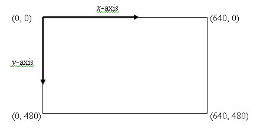

Last Modified 2/21/12
Window Organization • Imports • Framework • Text • Lines • Rectangles, Ovals, Arcs • Colors & RGB • Filled Shapes • Window Modifications
The computer screen is made up of several picture elements or pixels. In turn, then, each window is made up of pixels.
Each pixel has a set of coordinates, which operate similarly to Cartesian coordinates. The key difference, though, is that the upper left corner is (0, 0) here (instead of the lower left).
Consider this illustration for a window that is 640 pixels wide by 480 pixels tall:

Window Organization • Imports • Framework • Text • Lines • Rectangles, Ovals, Arcs • Colors & RGB • Filled Shapes • Window Modifications
In order to use graphics in Java programs, there are a number of libraries we need to import. For the sake of what will be covered in these notes, you need the following statements:
import javax.swing.JFrame;
import java.awt.Graphics;
import javax.swing.JPanel;
import java.awt.Color;
import javax.swing.JLabel;
import javax.swing.ImageIcon;
import java.awt.BorderLayout;
Once you've seen what's in these notes, it should be fairly obvious which statements do what. Of course, only import what you actually use in a program in practice.
Window Organization • Imports • Framework • Text • Lines • Rectangles, Ovals, Arcs • Colors & RGB • Filled Shapes • Window Modifications
We'll use a framework for our programs where we'll launch a window where we'll do our drawing. This window will make use of some existing code via inheritance, thus our class must have JPanel as a superclass.
The key method in JPanel we must override for our programs is paintComponent(), which is void and takes in an object of the Graphics class. In fact, we will be passing a Graphics class object around anytime we do drawing. It's customary to call this object g. Note the superclass method call within within method.
We could opt to build a class that extends JPanel and have a separate main program. However, I'm opting to introduce this all tied into one program to focus on Graphics, so I'll include the main program in the framework for this introduction. We'll put the code there to set up and launch a window.
Finally, the constructor is optional here, but can be used to set the background color of the drawing window.
Here is a framework, with required code in color:
public class DrawPanel extends JPanel
{ public DrawPanel() // set up graphics window
{
super(); setBackground(Color.WHITE);
} public void paintComponent(Graphics g) // draw graphics in the panel
{ int width = getWidth(); // width of window in pixels int height = getHeight(); // height of window in pixels
super.paintComponent(g); // call superclass to make panel display correctly // Drawing code goes here } public static void main(String[] args) { DrawPanel panel = new DrawPanel(); // window for drawing JFrame application = new JFrame(); // the program itself application.setDefaultCloseOperation(JFrame.EXIT_ON_CLOSE); // set frame to exit // when it is closed application.add(panel); application.setSize(500, 400); // window is 500 pixels wide, 400 high application.setVisible(true); } }
We'll now look at some of the drawing options you have while working with a Graphics object. As the drawing tools require a Graphics object, you'll need to use them in the paintComponent() method (or in a method called from the paintComponent() method with g passed to it).
Note: These notes assume your Graphics object is called g.
Window Organization • Imports • Framework • Text • Lines • Rectangles, Ovals, Arcs • Colors & RGB • Filled Shapes • Window Modifications
You can print text in a graphics context via:
g.drawString( string , start x-coordinate , start y-coordinate );
For example, the following code would print "Hello, World" at (100, 150):
g.drawString("Hello, World", 100, 150);
Window Organization • Imports • Framework • Text • Lines • Rectangles, Ovals, Arcs • Colors & RGB • Filled Shapes • Window Modifications
You can draw a line via a method call:
g.drawLine( start x-coordinate , start y-coordinate , end x-coordinate , end y-coordinate );
For example, the following code would draw a line from the top left of a window to (20, 40):
g.drawLine(0, 0, 20, 40);
Problem: Given the framework defined above, write a line of code to draw a line from the bottom left corner of the window to the upper right corner.
Window Organization • Imports • Framework • Text • Lines • Rectangles, Ovals, Arcs • Colors & RGB • Filled Shapes • Window Modifications
You can draw a rectangle via a method call:
g.drawRect( x-coordinate of top left corner , y-coordinate of top left corner ,
width , height );
For example, the following code would draw a rectangle starting at (10, 10) that is 100 pixels high and 200 pixels wide:
g.drawRect(10, 10, 200, 100);
Ovals operate under a similar principle. They have a bounding rectangle; in other words, you send the same arguments to the oval method call as you would to the rectangle call, but you don't see that rectangle. Instead, the oval with fit inside the rectangle. Here's the general form:
g.drawOval( x-coordinate of top left corner , y-coordinate of top left corner ,
width , height );
Using the same example, the following code would draw an oval in the bounding rectangle we drew above:
g.drawOval(10, 10, 200, 100);
Problem: Write a line of code that draws a square with sides of length 20 at the center of the window.
Arcs operate under a similar principle to ovals. There is once again a bounding rectangle. As the arc is part of an oval, we need to add additional arguments for what part of the oval we want to draw. These are the starting angle and ending angle in degrees. Imagine a set of axes centered at the center of the oval. Then 0 degrees would correspond to the positive x-axis. Here's a general form for drawing an arc:
g.drawArc( x-coordinate of top left corner , y-coordinate of top left corner ,
width , height , start angle , angle swept out );
Problem: Sketch on paper the arc drawn by this code:
g.drawArc(10, 10, 200, 100, 45, 90);
Window Organization • Imports • Framework • Text • Lines • Rectangles, Ovals, Arcs • Colors & RGB • Filled Shapes • Window Modifications
Java defines a Color class; instances of this class represent various colors.
At the simplest level, we could pick one of 13 predefined colors from Java's virtual box of crayons:
Of course, there are many more colors we might want. We can specify other colors using the RGB model, which specifies a color with a red value, a green value, and a blue value (each called channels). For example, the red value is how much red we want in our color. In different graphics system, the individual color values might be represented in different ways, but in Java, we use 8 bits to each color value. This gives us 256 (28) choices for each of the R, G, and B values, and choices range from 0 to 255.
So, we'd specify a color as follows:
Component Minimum Value Maximum Value Red Value 0 (no red) 255 (all red) Green Value 0 (no green) 255 (all green) Blue Value 0 (no blue) 255 (all blue)
So, a color is represented as an ordered triple. (0, 0, 0) is the absence of color, or black. (255, 255, 255) means all colors are at their maximum value, which corresponds to white.
We can create Color objects using RGB values:
Color colorName = new Color( red value , green value , blue value );
So, the following code would create the color black (note that there's a constant though):
Color blackEx = new Color(0, 0, 0);
More interestingly, the following code would create a color that is a dark shade of blue:
Color darkBlue = new Color(0, 0, 102);
Tangential Note: 256 is also 162, which means a component of color can also be represented as 2 hexadecimal digits. Going with this, FF == 255. In other graphics systems, a triple is represented by 6 hex digits, where the first two are the red value, the second two are the green value, and the last two are the blue value. Thus, FF0000 is red, 00FF00 is green, and 0000FF is blue. We could combine colors: FF00FF is magenta . (Be careful, though, it's more involved than this.)
Problem: Recalling that 256 is 28, how many different colors does the RGB model allow us to choose from?
Problem: Define a Color object for magenta (disregarding the existing constant).
We use the following line of code to change the color in which drawing will occur:
g.setColor( colorObject );
The sequential flow of programs is key here. This color setting persists until is changed. We could draw one object in this color or 20; but it stays until the next time we call setColor().
Consider the following example calls to setColor():
g.setColor(Color.ORANGE); // use Color constant g.setColor(darkBlue); // use the Color object defined above g.setColor(new Color(0, 102, 0)); // create a Color object on the fly
Window Organization • Imports • Framework • Text • Lines • Rectangles, Ovals, Arcs • Colors & RGB • Filled Shapes • Window Modifications
Now that we know about colors, we may also want to draw shapes that are filled in, instead of just the outlines of shapes we drew above. Drawing filled shapes involves the same arguments as above, but the method name is slightly different. Here are the general forms:
g.fillRect( x-coordinate of top left corner , y-coordinate of top left corner ,
width , height );
g.fillOval( x-coordinate of top left corner , y-coordinate of top left corner ,
width , height );g.fillArc( x-coordinate of top left corner , y-coordinate of top left corner , width , height , start angle , angle swept out );
Example: Consider the following example of using colors and filled shapes:
g.setColor(Color.RED);
g.fillRect(10, 10, 200, 200);
g.setColor(new Color(0, 0, 102));
g.fillOval(20, 20, 180, 180);
Window Organization • Imports • Framework • Text • Lines • Rectangles, Ovals, Arcs • Colors & RGB • Filled Shapes • Window Modifications
Let's look at two settings we can change in the main function to change our window. This assumes the framework above, where application is the JFrame object.
We can change the name of the window:
application.setTitle("Name of your window")
We can change the background color:
application.setBackground( colorObject );
Note that the latter sets the JFrame's background color, but in our framework above, we have a JPanel sitting on top of the JFrame, so you'd need to use the setBackground of the constructor in the framework above to change that color if desired.
Window Organization • Imports • Framework • Text • Lines • Rectangles, Ovals, Arcs • Colors & RGB • Filled Shapes • Window Modifications